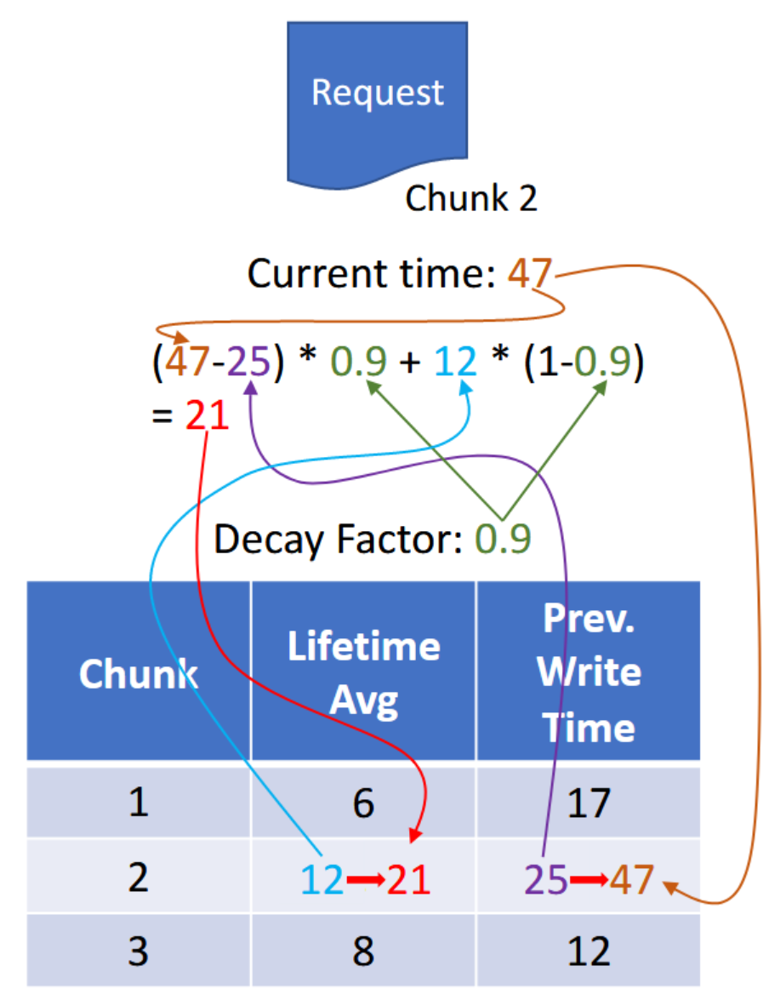
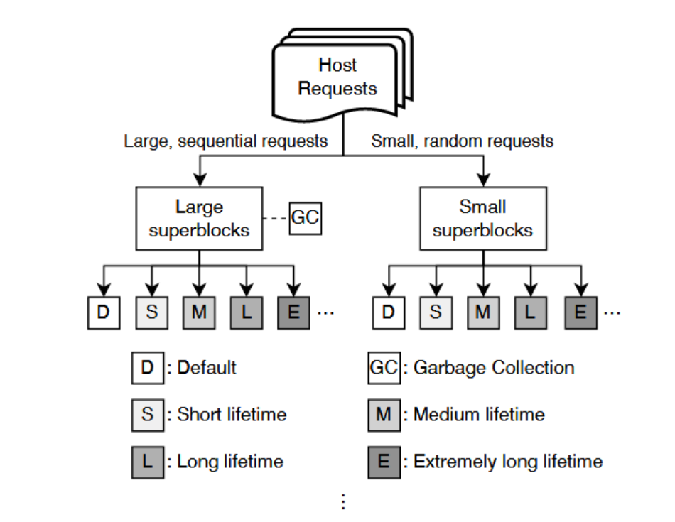
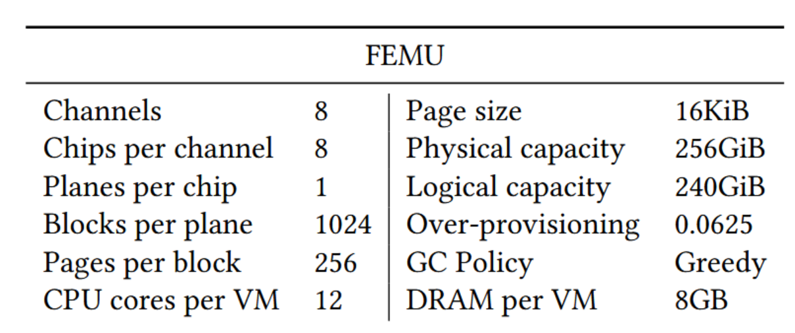
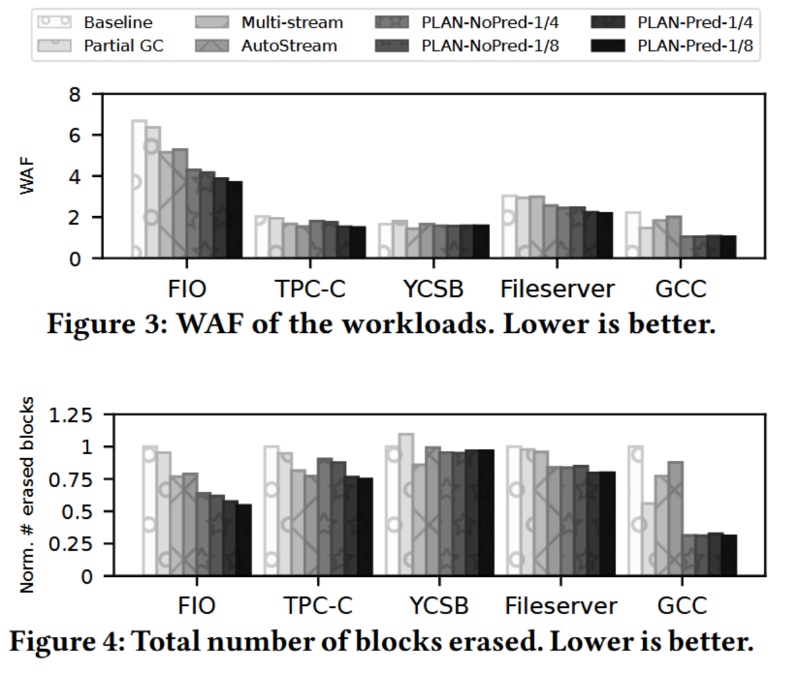
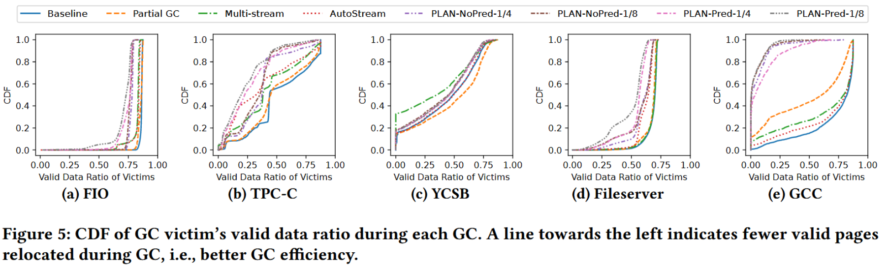
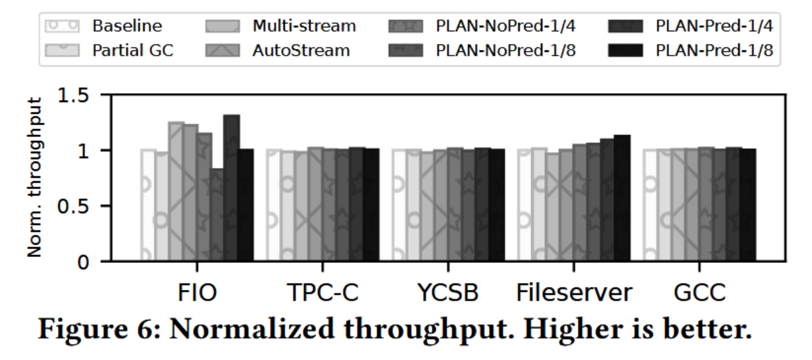

Excessive SSD-Internal Parallelism Considered Harmful
背景
随着过去十年内固态硬盘（SSD）容量的显著提升，SSD管理的基本单位也随之增大，旨在减轻管理负担。随着每个存储块包含的页面数和每个芯片的块数的增加，固态硬盘的闪存转换层（FTL）需要追踪更多的信息。因此，现代SSD倾向于在超级块（一个包含多个块的更大单位）级别处理写入请求，通过在所有可用通道和芯片上进行数据条带化来增强并行性并降低动态随机存取内存（DRAM）的使用。此外，SSD在超级块级别执行垃圾回收（GC），选择一个超级块作为回收目标，迁移其中的有效数据，并清除整个超级块。但是，更大的管理单位以牺牲性能为代价来换取更低的空间开销。
较大的超级块意味着可供垃圾回收的候选超级块数量减少，导致必须整个清除超级块，即使其内部的有效数据分布不均。考虑到实际工作负载很少完全均匀，这种设计在GC过程中需要迁移更多的有效数据，降低性能并减少SSD寿命。因此，更小的超级块对于提高GC效率至关重要，是优化SSD性能和延长其寿命的关键。
方法概述
灵活的超级块大小设计
- 思想：大型、顺序的请求使用大超级块，而小型、随机的请求则使用小超级块。
- 实现方式：
- 大超级块覆盖全部通道及其上的所有芯片（# channel * # chips）。
- 小超级块覆盖全部通道，但只使用部分芯片（# channel * 1/4 # chips）。
- 通过分析请求的起始和终止扇区来确定请求的大小。
- 在执行GC时，优先选择无效页比例最高的超级块。
生命周期预测
- 粒度：逻辑地址空间被分成多个块，每个块由32个页面组成。为每个块使用4字节的数据结构来记录其信息，包括加权平均寿命、上一次写入操作的时间和类型。当一个块被覆盖写或变为无效时，更新该块的加权寿命。更新方式如下图所示：

- 策略：同时开放多个超级块以服务不同寿命的数据请求，例如，短生命周期超级块处理寿命小于1秒的数据，而长生命周期超级块处理寿命在3到7秒之间的数据。对于还没有预测寿命的数据，使用默认超级块。

实验设计
- 平台：FEMU，参数设置如图所示。

- 负载类型：
- FIO：使用4个线程，每个线程向不同大小的文件发送总共256GB的读写请求（读写比为50/50）。所有请求均为随机访问，请求大小固定为4KB，队列深度设置为32。
- TPC-C：使用MySQL数据库，页面大小为4KB，通过BenchBase工具执行，配置30个终端和30个仓库进行测试。
- YCSB：插入了1亿个键值对，随后使用工作负载A（读写比为50/50）发出5000万个请求进行性能测试。
- Fileserver：使用Filebench工具模拟文件服务器的工作负荷，创建1百万个大小为128KB的文件，并通过16个并发线程执行模拟的文件操作。
- GCC：模拟了编译Linux内核的过程，重复执行100次。每次实验都会将内核源码复制到SSD上，然后编译内核，最后删除源码和生成的二进制文件，以模拟编译过程中的磁盘I/O活动。
- 对比方案：
- Baseline：传统固态盘
- Partial GC：在使用超级块的同时，将GC的单位设为单个块
- Multi-stream
- Autostream
- PLAN-NoPred：在不进行生命周期预测的情况下，将大型请求写入大超级块，小型请求写入并行度较低的小超级块（1/4或1/8的芯片数）。
- PLAN-Pred：在PLAN-NoPred的基础上加入了寿命预测技术，根据数据的预测寿命将其分配到不同的超级块中，既有1/4也有1/8的芯片数版本。
测试结果
- 写放大

- GC效率优化

- 吞吐量优化

Excessive SSD-Internal Parallelism Considered Harmful
https://ci-tz.github.io/2024/03/14/Excessive-SSD-Internal-Parallelism-Considered-Harmful/